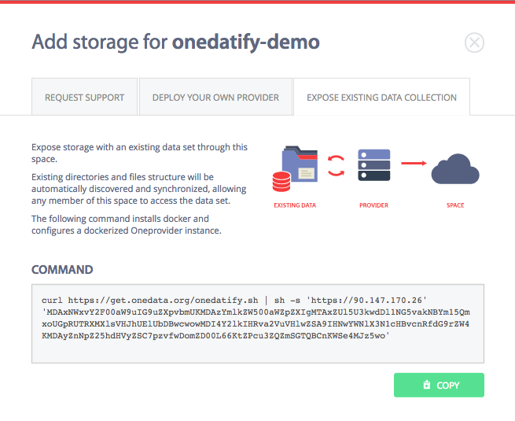

Deploy Oneprovider and expose existing data collection with Onedatify
Onedatify is an easy to use script for automating the deployment of Docker based Oneprovider instance, automatically registered to a selected Onezone with selected storage resources and enabling import of legacy data sets.
Prerequisites
In order to use this setup method the following is necessary:
- account in a Onezone instance, with which Oneprovider should register
- a clean VM or physical machine with Fully Qualified Domain Name assigned
- necessary opened ports for communication with Onezone
Deploy Oneprovider and expose existing data collection
Follow carefully the following steps.
Create a new space in Onezone
The first step to deploy Oneprovider using Onedatify script is to create a new space, which will be automatically supported by the new Oneprovider instance.
Go the main Onezone interface and select DATA SPACE MANAGEMENT->Create new space:
Generate oneline Onedatify command in Onezone
Go to Onezone interface, and select Add storage... option under the space name.
Select the tab EXPOSE EXISTING DATA COLLECTION:

and copy the generated command.
Run the command on the target host
Paste the copied command in the terminal on the Oneprovider machine (as superuser).
Check the prerequsite list and confirm to proceed to the next step:

If necessary, the Onedatify script will ask for permission to install all necessary dependencies including Docker and Docker Compose.
After the dependency installation is complete, the script will ask several questions and suggest default setting for each one:
The progress can be monitored on a separate terminal using the following command:
journalctl -u onedatify.service -f
After the deployment is complete, the following message will be shown, with connection details for administration panel for the Oneprovider instance:

Check the filesystem scan progress in the Onepanel interface
If you chose option to expose existing data collection, you can monitor the filesystem scan progress, it is possible to login to the Onepanel and watch the scan process statistics:

When the scan is complete, the files can be accessed in a regular manner via the Oneprovider GUI or using Oneclient command line tool.